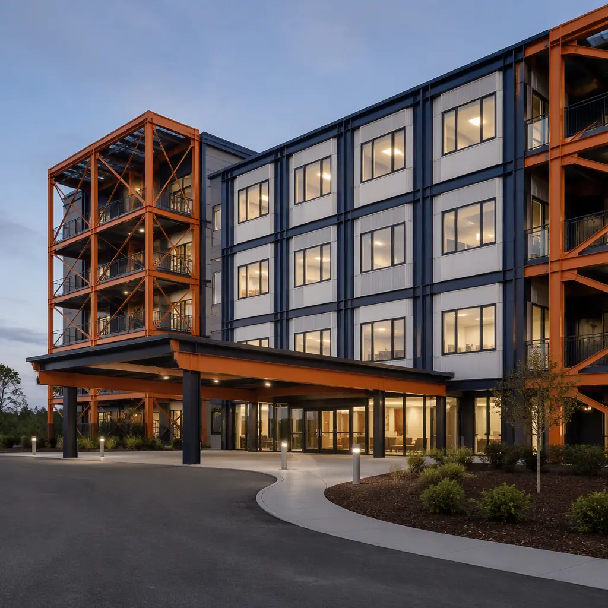
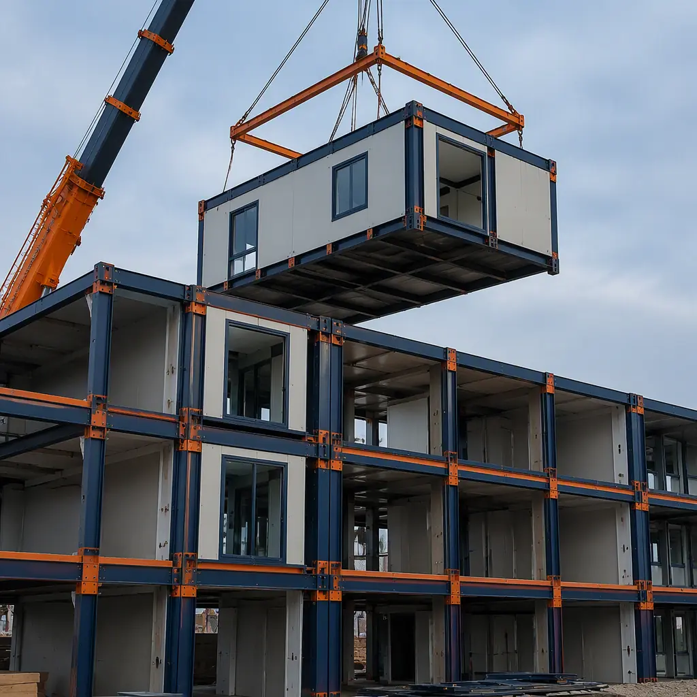
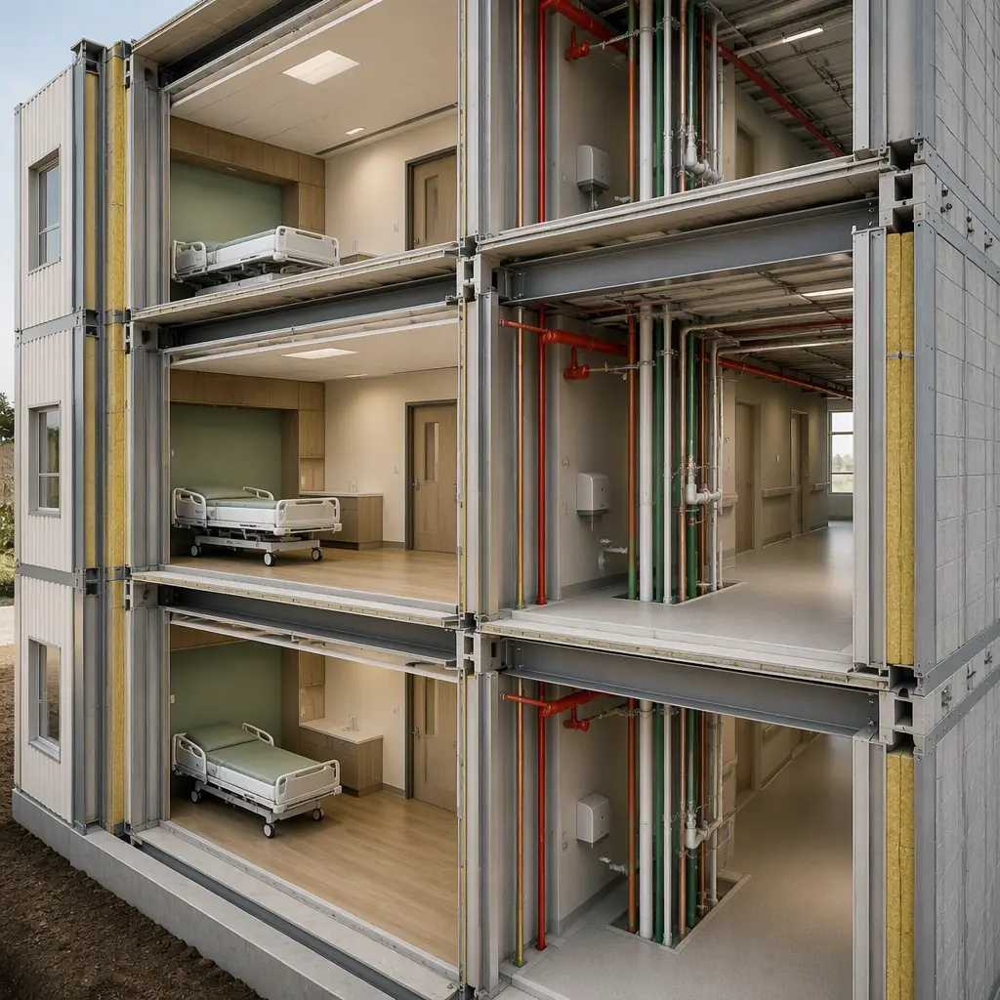
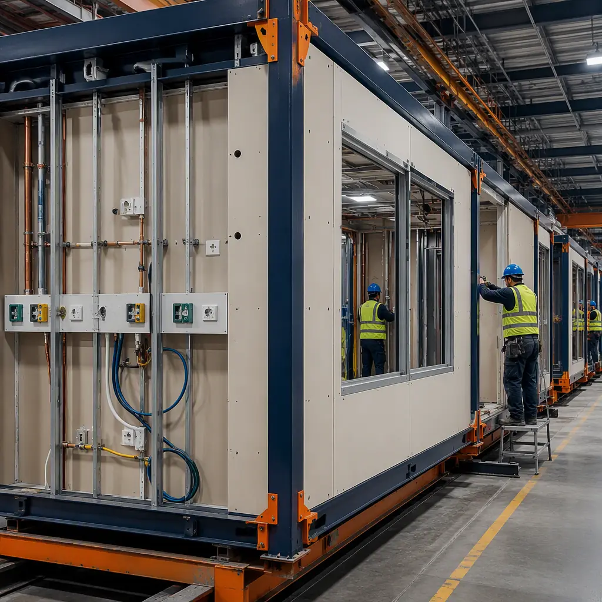

Skilled nursing facilities sit at the highest-acuity end of residential care: 60–120 bed buildings where residents receive 24-hour nursing, medication management, rehabilitation therapy, and medical oversight — a program that combines the life-safety rigors of a hospital with the comfort expectations of a home. The United States alone operates more than 15,000 SNFs, and with the 65+ population growing by roughly 1.5 million people per year, the post-acute care supply gap is widening faster than conventional construction can close it. A 100-bed SNF conventionally takes 18–30 months to deliver at $350–$550 per sq ft. Modular prefabricated construction restructures the program: resident room modules, nursing units, therapy gyms, dining, and administrative modules are factory-built as steel-frame units — medical gas, nurse call, sprinklers, and fire-rated assemblies installed in the plant — then craned into place and commissioned in 9–14 months, with a 15–30% building cost reduction and a facility that opens certified, not chasing inspection findings. The approach extends the factory-built logic we document for modular healthcare facility construction into the specific CMS, NFPA 101, and life-safety framework that governs skilled nursing. This guide covers the SNF module package, life-safety and medical infrastructure, cost structure, and the regulatory path for operators, developers, and REIT-backed care groups.

What Makes Skilled Nursing Different From Assisted Living
Skilled nursing is frequently grouped with assisted living, but the building programs diverge sharply. Assisted living is residential care with activities-of-daily-living support; skilled nursing is medical care delivered in a licensed facility under Medicare and Medicaid certification. The building differences are structural:
- Medical gas and clinical infrastructure. SNFs carry oxygen, medical air, and suction systems to resident rooms and treatment areas — infrastructure that assisted living does not require. Factory-built modules integrate these systems as pre-tested assemblies rather than field-run utility chases.
- Nursing unit design. Resident rooms cluster around nursing stations with line-of-sight and nurse call coverage requirements; each unit needs its own medication room, soiled utility, clean utility, and nourishment center. These repeatable unit plans are exactly what modular manufacturing does best — the same repeatable-clinical-unit logic we document for modular hospital construction, scaled to the SNF staffing model.
- Therapy and rehabilitation spaces. Physical, occupational, and speech therapy gyms need clear-span space for equipment, parallel bars, and treatment stations — a floor plan that maps onto the open ends of module wings, using the same clear-span framing we build for modular fitness and therapy facilities.
- Life safety is a licensure condition. NFPA 101 chapter 18/19 governs corridor widths, fire-rated compartmentation, sprinkler coverage, and egress in SNFs — and a building that fails these cannot be certified. Factory-built fire-rated assemblies remove the field-work variability that causes inspection failures.
The comparison with assisted living is detailed in our modular assisted living guide; the full senior-care delivery spectrum — from independent living through SNF — is covered in our senior living construction guide.

The Modular SNF Module Package
A modular skilled nursing facility divides into functional blocks that are manufactured, tested, and shipped independently, then combined on site:
Resident Room & Nursing Unit Modules
The resident room module is the building block of the SNF: private and semi-private rooms with headwall-mounted medical gas, nurse call, and lighting systems; accessible bathrooms; and the fire-rated corridor wall forming one side of the module. Modules are stacked two to three stories high with the corridor formed at the module joint, creating the compartmented nursing unit that NFPA 101 requires. Rooms are finished to the resident-facing standard the operator specifies — the customization depth we document for modular building design flexibility — with the clinical infrastructure identical in every unit.
Therapy, Dining & Activity Modules
Therapy gyms, dining rooms, activity spaces, and the central kitchen occupy the clear-span sections of the building. These are built as large modules or module pairs with the structural columns at the perimeter, giving the open floor plans therapy equipment and dining service need. The kitchen follows the same commercial-food-service logic we document for modular restaurant and food-service construction, sized to the facility's meal census and inspection requirements.
Administration, Admissions & Support Modules
Administration, admissions, staff offices, and the central nursing support core complete the program. The support core carries the main electrical room, medical gas manifold room, and fire alarm control — the MEP backbone we detail for modular MEP systems integration — factory-coordinated so every module's systems terminate into a known interface.

Life Safety & Medical Infrastructure
Skilled nursing certification turns on two systems: life safety and medical infrastructure, and both are factory-executed in modular delivery. Fire protection is engineered as a complete system — sprinklers installed and flow-tested in the plant, fire-rated corridor and floor assemblies built to the UL assembly listed for the design, and the fire alarm system pre-programmed at the factory — the comprehensive passive and active protection framework we document for modular fire safety construction. Medical infrastructure adds oxygen, medical air, suction, and the nurse call system, each installed and tested before the modules ship. The nurse call system is particularly important in SNFs: it is a resident-safety system that regulators inspect in detail, and factory installation with pre-terminated wiring removes the single most common field defect. Resident rooms are also engineered for the bariatric and mobility realities of the census — reinforced ceiling lifts, widened doorways, and roll-in showers — the accessibility discipline we document for ADA-compliant modular buildings, extended to the clinical room standard.
Cost Structure — Modular vs. Conventional SNF Delivery
| Cost Category | Conventional (100-bed / 65,000 sq ft) | Modular (100-bed / 65,000 sq ft) |
|---|---|---|
| Building shell & structure | $8.5–14M | $6.5–10.5M (factory-built) |
| Medical gas, nurse call & life safety | $1.8–3.2M | $1.2–2.2M (plant-integrated) |
| Therapy & dining fit-out | $1.5–2.8M | $1.0–1.9M (pre-finished modules) |
| Field labor, phasing & schedule risk | $3.0–5.5M | $1.3–2.4M |
| Total SNF Delivery | $14.8–25.5M | $10.0–17.0M |
The 25–30% building cost reduction compounds with 9–16 months of earlier licensure — for a for-profit operator that means Medicaid and Medicare revenue starting a full year earlier, and for a not-for-profit it means the community's care gap closing sooner. For the full economics of modular project delivery, see our 2026 modular cost guide and our developer's ROI analysis.
Regulatory Path: CMS, State Licensure & NFPA 101
Skilled nursing facilities are among the most regulated buildings in construction, and modular delivery is engineered to clear each gate faster. CMS certification requires the building to meet NFPA 101 Life Safety Code and the CMS Conditions of Participation; state licensure adds state-specific construction and staffing review; and the certificate of need (CON) states require a documented need determination before construction. Modular delivery's advantage runs through every step: the factory's quality-assurance documentation package satisfies CMS's construction documentation requirements, the life-safety drawings are submitted as a complete engineered system, and the shorter construction schedule compresses the gap between CON approval and revenue operation — the risk-reduction logic we document for modular project risk reduction. The structural warranties that operators and lenders expect are covered in our warranties and structural guarantees guide.

Financing, Phasing & Campus Expansion
SNF development is capital-intensive and schedule-sensitive, and modular delivery aligns with both realities. Construction financing carries a high cost of carry — every month of construction is a month of interest before revenue — so the 9–14 month modular schedule delivers a financing benefit that our modular construction lending guide quantifies. For operators expanding existing campuses, modular additions — a new nursing unit wing, therapy expansion, or memory care pod — are factory-built while the existing facility continues operating, then connected during a planned transition, the live-facility phasing we document for modular additions and expansions. The procurement path for health systems and REIT-backed operators is covered in our RFP procurement guide.
Is Modular Right for Your Skilled Nursing Project?
Modular SNF delivery delivers the strongest value for operators replacing aging facilities on a fixed licensure timeline; for developers building new 60–160 bed facilities where interest carry and revenue timing dominate the economics; for health systems expanding post-acute capacity adjacent to existing hospitals; and for rural and underserved markets where the local construction labor pool cannot support an 18–30 month site build — the same labor-shortage logic we document for modular construction and the skilled labor shortage. For small board-and-care conversions of existing homes, conventional renovation is usually simpler; the modular case is strongest at 60+ beds, where the life-safety and medical infrastructure investment makes factory execution decisive. In every case, the factory-built SNF delivers the fire-rated compartmentation, medical gas, and nurse call systems that licensure depends on.